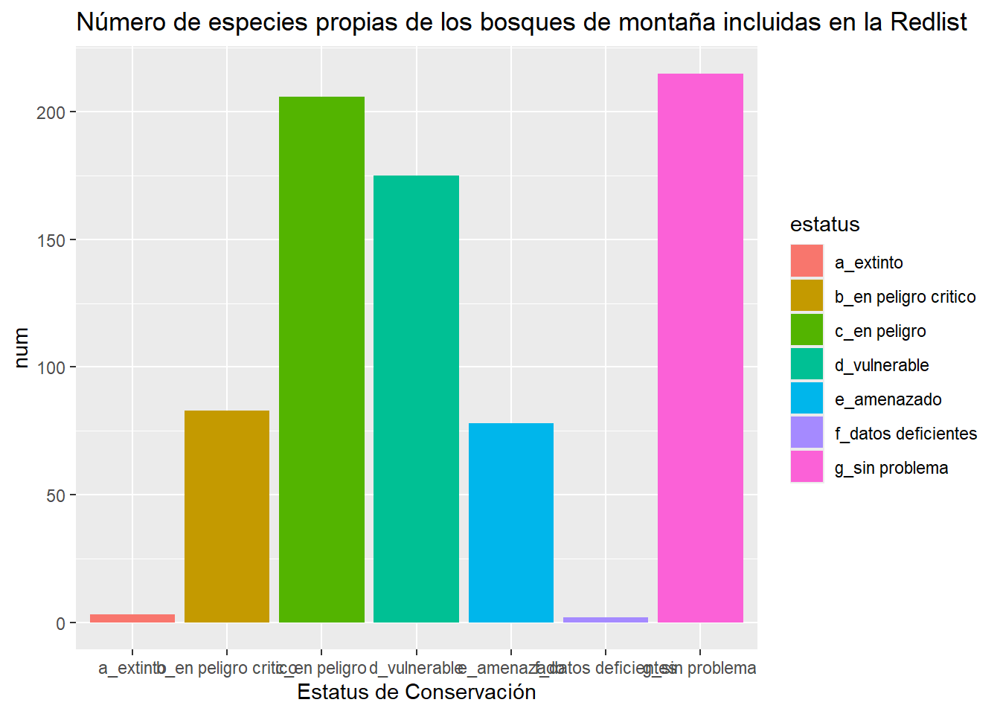

![]()
estatus | num |
|---|---|
a_extinto | 3 |
b_en peligro critico | 83 |
c_en peligro | 206 |
d_vulnerable | 175 |
e_amenazado | 78 |
f_datos deficientes | 2 |
g_sin problema | 215 |
This document shows a minimal example of the template. For more information, see the full demo and its source.
Datos
Section numbering can be specified in the YAML section-numbering field as other Typst templates.
Subsection as Heading Level 2
You can use LaTeX math expressions:
\[ Y_{it} = \mu_i + Status_i + \varepsilon_{it}. \]
Citation
You can cite a reference like this (Katsushika 1831) or Horst, Hill, and Gorman (2020). Typst has some built-in citation styles. Check the Typst documentation for more information. The Red List of Mexican Cloud Forest Trees
Figures and Tables
Figures
Como se muestra en la Figura 1 Figure 1 shows, the caption is displayed below the figure. As a caption of the figure (fig-cap), I use bold text for the title and use a normal text for the description.
Warning: package 'ggplot2' was built under R version 4.4.3

Tables
You can use tinytable for general tables and modelsummary for regression tables.1 As Table 1 shows, the caption is displayed above the table. The notes of the table can be added using the notes argument of the tinytable::tt() function.
| mpg | cyl | disp | hp | drat |
|---|---|---|---|---|
| _Notes_: This table shows the first six rows of the mtcars dataset. | ||||
| 21.0 | 6 | 160 | 110 | 3.90 |
| 21.0 | 6 | 160 | 110 | 3.90 |
| 22.8 | 4 | 108 | 93 | 3.85 |
| 21.4 | 6 | 258 | 110 | 3.08 |
| 18.7 | 8 | 360 | 175 | 3.15 |
Last words
I made this template for my working papers, so it may not be suitable for other fields than economics. I am happy to receive feedback and suggestions for improvement.
{{< appendix >}}Supplemental Figures
The figure numbering will be reset to “A.1”, “A.2”, etc so that it is clear that these figures are part of the appendix.
References
Horst, Allison Marie, Alison Presmanes Hill, and Kristen B Gorman. 2020. Palmerpenguins: Palmer Archipelago (Antarctica) Penguin Data. https://doi.org/10.5281/zenodo.3960218.
Katsushika, Hokusai. 1831. “The Great Wave Off Kanagawa.” https://upload.wikimedia.org/wikipedia/commons/a/a5/Tsunami_by_hokusai_19th_century.jpg.
{kind=link}
Footnotes
Since the default backend of
modelsummaryistinytable, you can use the customization options oftinytableformodelsummary.↩︎